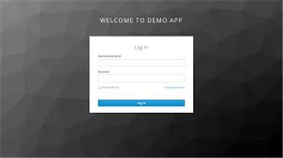

개요

AWS Console 로그인을 위해 Keycloak을 이용합니다. AWS IAM 기능과 Keycloak을 활용해 saml SSO를 구현해야 합니다. 구성 시 Keycloak서버 설정에 대한 부분은 모두 자유롭게 구성합니다. 사용 할 VPC, 컨테이너 활용, EC2 사용 모두 상관 없습니다.
단 과금을 줄이기 위하여 인스턴스 크기는 t3.medium 정도 규모를 넘어 서지 않아야 하며, 모든 리소스는 선수용 AWS 계정에 생성되어야 합니다. 또한 이미 생성되어 있거나 과제에 필요한 IAM 유저는 따로 삭제하지 않고 기존의 IAM 유저를 활용한 로그인 방법도 그대로 가능하도록 유지합니다.
사용 기술
| 분류 | 항목 |
|---|---|
| AWS | IAM, EC2, VPC, Route53 |
| 언어/도구 | Keycloak, saml SSO |
선수 유의사항
- 선수의 계정에는 비용의 제한이 존재하며, 이보다 더 높게 요금이 부과될 시 계정 사용이 불가능할 수 있습니다.
- 문제에 제시된 괄호 박스 <>는 변수를 뜻함으로 선수가 적절히 변경하여 사용해야 합니다.
- EC2 인스턴스의 TCP 80/443 outbound는 anyopen하여 사용할 수 있도록 합니다.
- 과제의 Bastion 서버에서 대부분의 채점이 이루어짐으로 인스턴스를 생성하지 않았거나 종료된 상태면 채점이 불가능하니 각별히 주의하도록 합니다.
- 과제 종료 시 진행 중인 테스트를 모두 종료하여 서버에 부하가 발생하지 않도록 합니다.
- 별도 언급이 없는 경우, us-east-1 리전에 리소스를 생성하도록 합니다.
- 모든 리소스의 이름, 태그, 변수과 변수는 대소문자를 구분합니다.
- 과제 종료 시 배포 또는 버킷 등 불필요한 리소스는 전부 삭제하시길 바랍니다.
2-1. AWS saml SSO with Keycloak
Keycloak 유저 생성
- AWS 로그인 시 사용할 Keycloak 유저를 2개 생성 합니다. admin<비번호>, dev<비번호> 두명의 유저를 생성합니다.
- 해당 유저는 AWS IAM 계정이 아닌 Keycloak에 추가 되어야 할 유저입니다. (UI는 버전 마다 약간 다를 수 있지만 Keycloak 페이지 여야 합니다.)
| 항목 | 값 |
|---|---|
| 유저 1 | admin<비번호> |
| 유저 2 | dev<비번호> |

AWS IAM role 매핑
- AWS IAM에 admin-access 라는 IAM Role과, poweruser-access라는 IAM Role 두개를 생성합니다. IAM Role의 권한은 PowerUser 이상 급 권한을 두 Role에 자유롭게 할당 합니다.
- admin<비번호> 유저가 AWS 로그인을 위한 Keycloak 페이지에 접근 하면 인증 후 AWS admin-access IAM Role에 접근할 수 있어야 합니다.
- dev<비번호> 유저가 AWS 로그인을 위한 Keycloak 페이지에 접근하면 인증 후 AWS poweruser-access IAM Role에 접근할 수 있어야 합니다.
| Keycloak 유저 | IAM Role |
|---|---|
admin<비번호> |
admin-access |
dev<비번호> |
poweruser-access |
참고채점시 Keycloak 페이지에 접근 가능하고 Keycloak 로그인 후 AWS IAM Role 선택 화면이 나오는지, 두 유저들이 인증을 거쳐 각자 할당된 IAM Role로 AWS Console에 로그인 할 수 있는지 확인합니다.
참고DNS는 채점 요소는 아니지만 선수가 필요 하다고 판단하는 경우 생성 해도 됩니다. 직접 Route53에서 DNS를 구매해도 되고, 1과제에서 사용했던 cloudhrdk{0-2}.com DNS를 위임 받아도 됩니다. DNS 구매나 위임이 필요한 경우 경기 종료 1시간 전에 심사장에게 요청하여 진행하도록 합니다.
제출
Local PC에서 접근 가능한 Keyclaok 주소 : ______________________________________